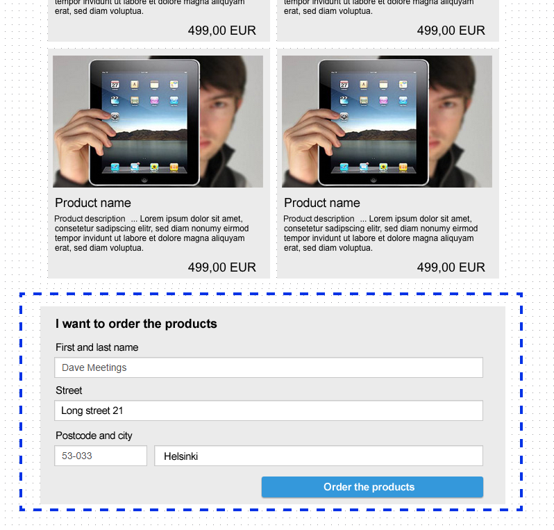
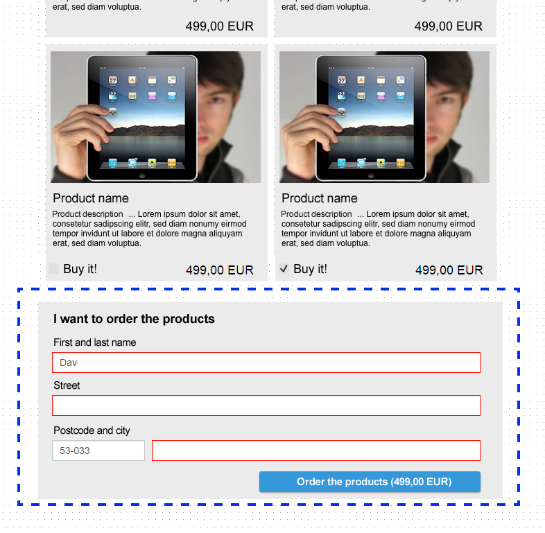
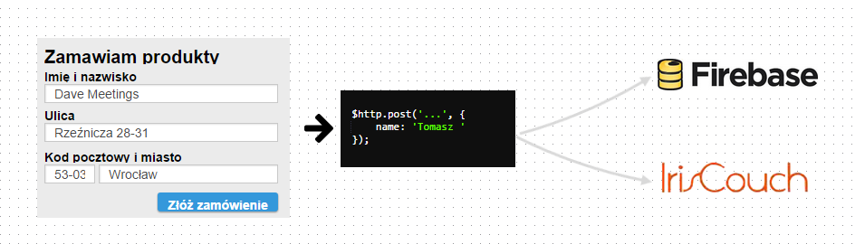

4a. Ordering Form // required
Instead of sending the form just display an alert

4b. Form with basic validation // required
Mark fields as required
4c. Advanced validation in form // worth doing
Use ngPattern
, minLength
, etc.

4d. Custom Validator // extra
Create your custom validator (using Angular 1.2 or Angular 1.3 syntax) with wicked logic.
For instance check if city.length is even.
5e. Send ordering form to some online database // extra
You can use Firebase or IrisCouch
